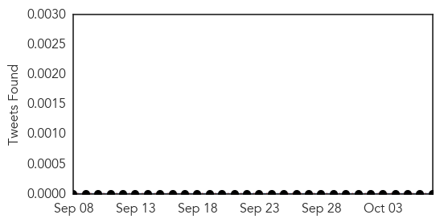
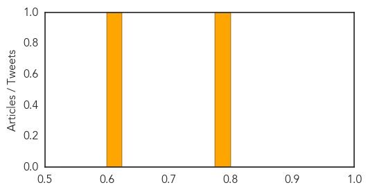

Cholera
30-Day Web Trend
0 alerts, 0 warnings
30-Day Twitter Trend
1 alerts, 0 warnings

Article Locations

Article Confidences

Top Articles:
Top Tweets:
- 0.509
- Each year the WER provides an update of the number of Cholera cases & deaths as reported to. Stay up to date! http://t.co/sjCWJrq17Z
Mold/Fungal
30-Day Web Trend
6 alerts, 0 warnings
30-Day Twitter Trend
0 alerts, 0 warnings

Article Locations
Article Confidences
Top Articles:
Top Tweets:
-
No tweets found for Oct 07, 2015